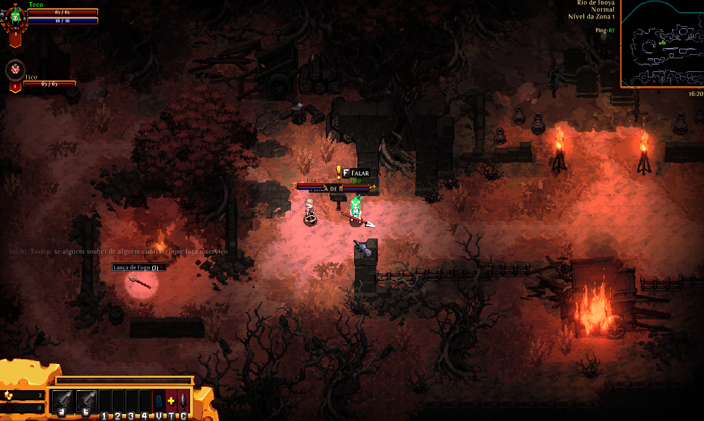
Ao iniciar sua jornada em Hero Siege, você começa em um mapa aberto repleto de inimigos. O objetivo inicial é limpar essa área, concluir as quests e encontrar o caminho até a cidade principal, que será sua base para comprar itens, melhorar equipamentos e avançar na campanha.
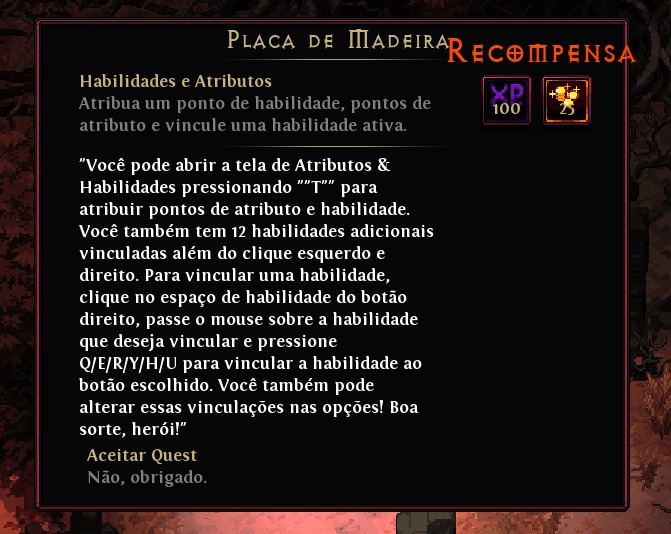
A cada nível conquistado, seu herói recebe 4 pontos de atributos e 1 ponto de habilidade. Distribuir esses pontos corretamente é essencial para sobreviver e avançar no jogo. Para realizar as atribuições é necessário abrir o menu de habilidades, pode ser feito apertando a tecla "T" no teclado.
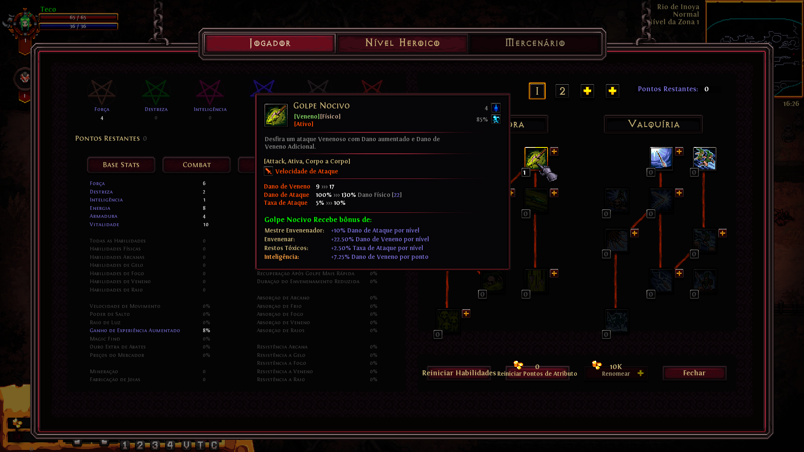
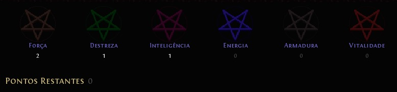
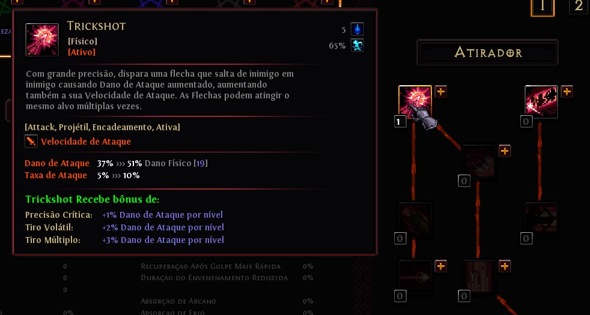
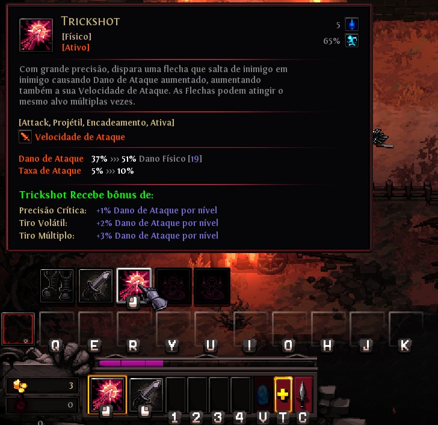
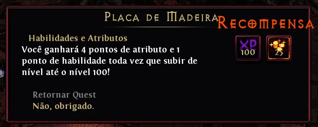
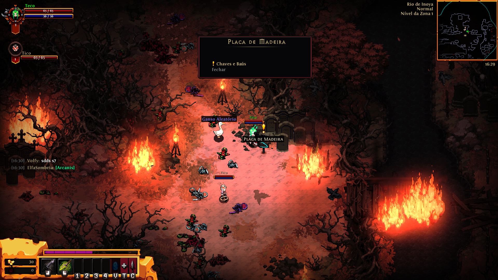
Durante o mapa inicial, você encontrará baús especiais que requerem chaves para serem abertos.
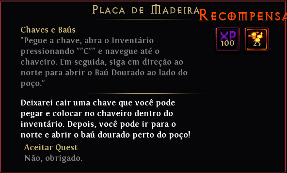
Eles contêm itens raros, moedas extras e equipamentos poderosos.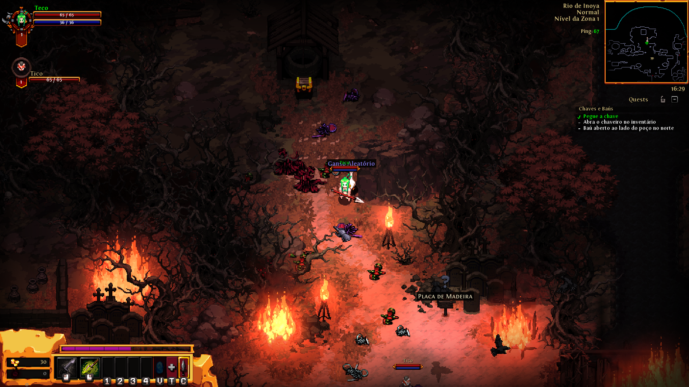
Ao iniciar a missão, você receberá uma chave que deve ser usada em um baú localizado na parte superior do mapa.
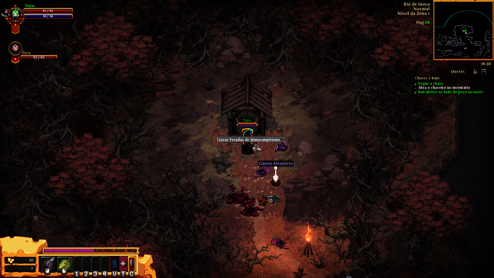
Abrindo o baú, você acessa os itens contidos nele. A nova chave recebida será armazenada na seção de chaveiros do inventário, podendo ser usada em outros baús especiais que encontrar pelo mapa.
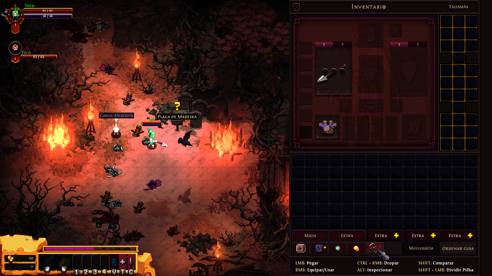
Após abrir o baú, você retorna ao local inicial da missão, se preparando para explorar novas áreas do mapa. Durante esse processo, você recebe a recompensa final da missão, consolidando seu progresso e fortalecendo seu herói.
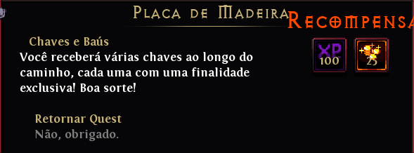
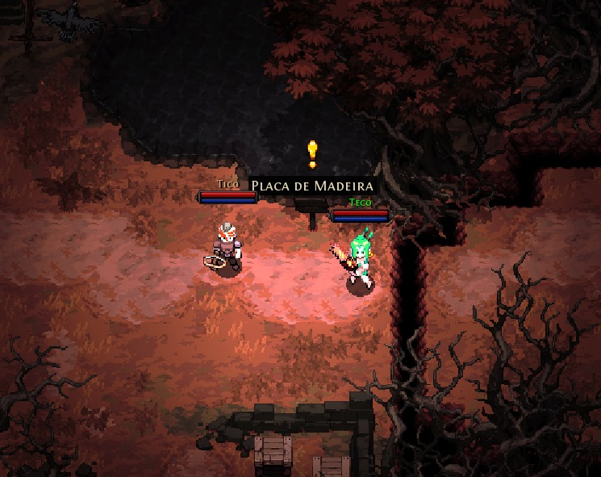
Pular é uma habilidade essencial para escapar de inimigos ou alcançar áreas inacessíveis. Dominar o pulo permite explorar melhor o mapa e encontrar itens escondidos.
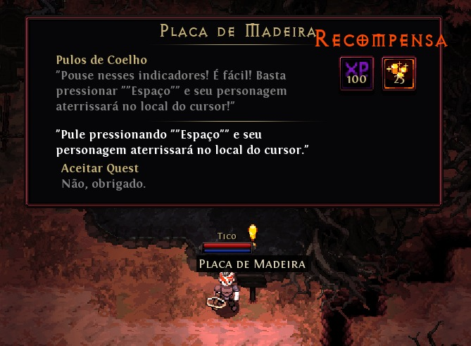
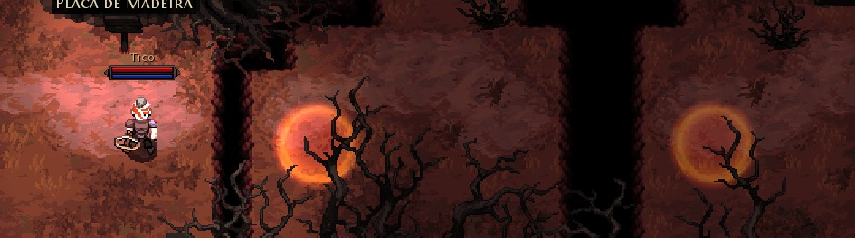
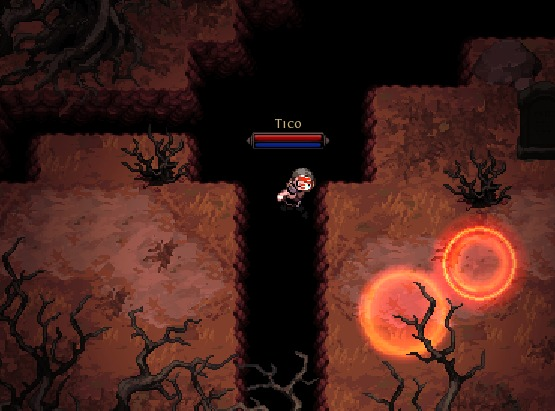
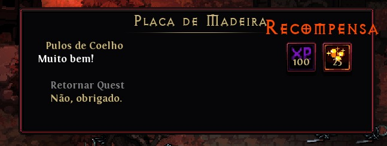
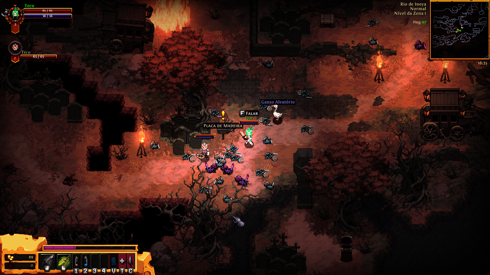
Nesta fase, você encontrará um inimigo mais poderoso que os demais. Derrotá-lo é necessário para avançar no mapa e concluir a primeira parte do jogo.
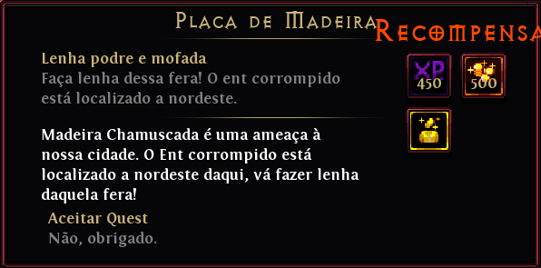
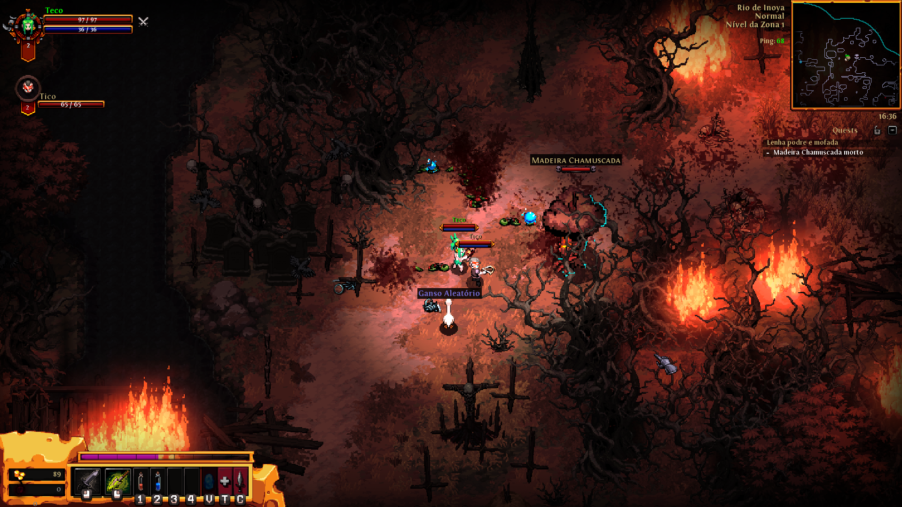
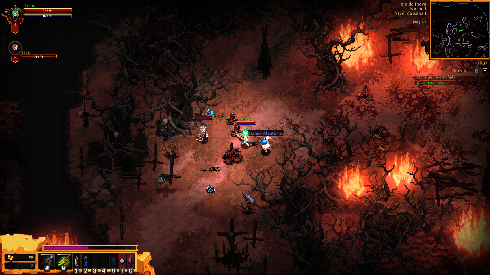